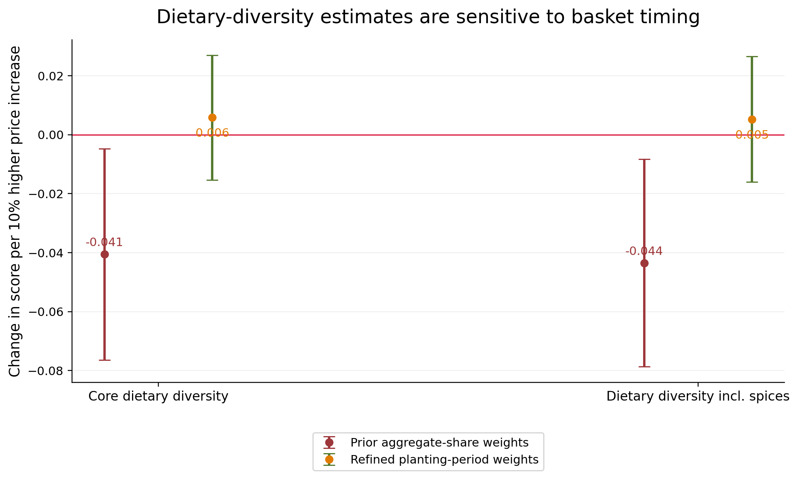

Introduction
Nigeria’s 2023/24 food-inflation episode raised a practical question with an empirical complication: when food becomes more expensive, do households eat fewer meals, narrow the range of foods they consume, or experience greater food insecurity? This portfolio study uses the Nigeria General Household Survey Panel Wave 5 to examine that question. The same households are observed during post-planting and post-harvest visits, and their dietary and food-security outcomes are linked to community food prices measured in both periods. The analysis focuses on whether households facing larger local price increases changed more than households facing smaller local increases.
Food-price pressure was severe during the survey period. Nigeria’s year-on-year food inflation was 30.64 percent in September 2023 and 40.01 percent in March 2024 (NBS, 2023, 2024a). Wave 5 interviewed households during July to September 2023 and again during January to March 2024 (NBS, 2026). The national figures describe a common inflationary environment, but they do not show how much the cost of each household’s particular food basket changed in its local market.
That distinction matters because the two interviews also represent different seasons. A household may face higher market prices at harvest while simultaneously receiving more food from its own production or earning seasonal farm income. Ismail et al. (2023) show that crop production and farming status can influence diet quality during high-price periods in African settings. The analysis therefore does not treat the planting-to-harvest change as a pure inflation effect. It asks a narrower question: among households observed in the same period, did those facing larger local price increases change more?
Research Question
Do Nigerian households exposed to larger local food-price increases between the planting and harvest visits of GHS-Panel Wave 5 experience larger changes in dietary diversity, the frequency of consuming protein-rich foods, meal frequency, or food insecurity? The question concerns differences in local price exposure within the 2023/24 survey period, rather than the total consequences of nationwide food inflation.
Data and Methodology
The analysis uses a quantitative two-period household panel design from Nigeria GHS-Panel Wave 5. The same households are compared between the post-planting visit in 2023 (coded 0 in the analytical dataset) and the post-harvest visit in 2024 (coded 1). The balanced panel contains 4,715 households, while the preferred model uses 4,259 households in 501 state-by-enumeration-area clusters with strong local price coverage. The key exposure is not national food inflation. It is a household-specific local price shock obtained by fixing each household’s food-group weights at the planting visit and using those pre-shock weights to aggregate the planting-to-harvest price changes observed in the household’s local market.
Constructing household price exposure
The first version of the analysis used food-budget shares from the Wave 5 consumption aggregate. That approach produced statistically significant negative dietary-diversity coefficients. The problem is timing: an aggregate share measured over a period that already contains price changes can reflect household substitution. If a household shifts away from an expensive food, the later budget share is partly an outcome of the shock rather than a clean pre-shock weight.
The price index was therefore rebuilt using the planting-period basket only. Planting food quantities were valued at planting community prices and grouped into 15 food categories. Those fixed shares were then used to weight planting-to-harvest local price changes. The refined household shock is correlated with the earlier measure, but not closely enough to treat them as equivalent. This sensitivity is substantively important because Headey et al. (2024) show that healthy-diet affordability estimates can change materially when basket and resource assumptions change. Once the weights are fixed before the price movement, the earlier significant dietary-diversity result disappears.
The household price shock is constructed as PriceShock_h = Σ_g s_hg,0 × Δln(P_c(h)g), where s_hg,0 is household h’s planting-period share for food group g and Δln(P_c(h)g) is the community food-group log price change. The shock is then divided by ln(1.10), so one unit of the regression variable represents a 10 percent larger local food-price increase.
Model specification and estimation
ΔYh = α + βPriceShock10h + δs(h) + ρUrbanh + γ′ΔZh + εh
Here, ΔY_h is the household’s harvest-minus-planting change in the outcome. Separate regressions are run for dietary diversity, protein-food and animal-source-food frequency, adult and child meal frequency, and three food-insecurity measures. δ_s(h) denotes state fixed effects, Urban_h identifies urban households, and ΔZ_h contains changes in the numbers of young children, older children and adults. Because there are only two observations per household, this first-difference model is algebraically equivalent to removing household fixed effects. The preferred model uses Wave 5 cross-sectional probability weights and state-by-enumeration-area clustered standard errors. The coefficient β is interpreted as the estimated within-household outcome change associated with a 10 percent larger local food-price increase.
The model is intentionally interpreted as associational rather than fully causal. Differencing removes all time-invariant household characteristics, but local time-varying factors such as harvest conditions can affect both food prices and household food availability. Robustness checks therefore re-estimate the model after winsorizing the price shock, removing survey weights, and replacing the preferred local shock with a hierarchical fallback measure in the full balanced sample. Heterogeneity tests interact the price shock with urban status and the presence of children under age 15. Benjamini–Hochberg false-discovery-rate q-values are also calculated across the ten baseline outcome tests to reduce the risk of overinterpreting isolated p-values.
Sample and local-price coverage
| Measure | Value |
|---|---|
| Balanced households | 4,715 |
| Households with non-missing refined local price shock | 4,318 |
| Preferred high-coverage households | 4,259 |
| Preferred state-by-EA clusters | 501 |
| Median refined local price increase | 25.69% |
| Correlation with prior aggregate-share price shock | 0.633 |
| Local high-coverage rule | At least 60% basket coverage and at least 6 local food groups |
Note. Counts and price-exposure statistics are calculated from the constructed Wave 5 analytical files. The high-coverage rule is researcher-defined and is not an official survey threshold.
Findings and Discussion
Descriptive changes between visits
Across the balanced sample of 4,715 households, the survey-weighted core dietary-diversity score falls from 7.53 to 7.33 food groups between planting and harvest. Protein-food frequency also declines modestly. Yet the eight-item food-insecurity count decreases from 4.235 to 3.938, while adult meal frequency changes very little. These outcomes measure different margins of adjustment, so they do not have to move together. Wiggins et al. (2026) document that households facing severe food-price crises can change food quality, non-food spending, labor supply, borrowing and asset use at the same time.
| Outcome | Planting 2023 | Harvest 2024 | Raw change |
|---|---|---|---|
| Dietary diversity (0-10) | 7.530 | 7.330 | -0.200 |
| Dietary diversity incl. spices (0-11) | 8.520 | 8.313 | -0.207 |
| Protein-food frequency | 7.541 | 7.346 | -0.195 |
| Animal-source frequency | 4.838 | 4.760 | -0.078 |
| Adult meals/day | 2.651 | 2.659 | +0.008 |
| Meals/day, children 5-15 | 3.083 | 3.078 | -0.005 |
| Meals/day, children 6-59m | 3.644 | 3.662 | +0.018 |
| Food insecurity count (0-8) | 4.235 | 3.938 | -0.297 |
| Food insecurity count (0-10) | 4.861 | 4.499 | -0.362 |
| Any food insecurity | 0.788 | 0.763 | -0.025 |
Note. Survey-weighted means for the balanced sample; the source dataset codes period = 0 as planting 2023 and period = 1 as harvest 2024. These raw changes combine seasonality, nationwide inflation, and all other changes between visits. They should not be interpreted as estimates of the association with local price exposure.

Local food-price exposure
The distribution of refined household-specific price changes varies across the preferred sample. For readability, the chart clips the plotted distribution at the first and ninety-ninth percentiles; estimation uses the untrimmed measure unless otherwise indicated.

Preferred first-difference estimates
| Outcome | Estimated association per 10% | SE | 95% CI low | 95% CI high | p | BH q | N |
|---|---|---|---|---|---|---|---|
| Dietary diversity (0-10) | 0.0058 | 0.0108 | -0.0154 | 0.0269 | 0.592 | 0.899 | 4,259 |
| Dietary diversity incl. spices (0-11) | 0.0052 | 0.0108 | -0.0160 | 0.0265 | 0.629 | 0.899 | 4,259 |
| Protein-food frequency (days sum) | -0.0000 | 0.0244 | -0.0479 | 0.0478 | 0.999 | 0.999 | 4,259 |
| Animal-source food frequency (days sum) | 0.0005 | 0.0193 | -0.0372 | 0.0382 | 0.980 | 0.999 | 4,259 |
| Adult meals per day | 0.0067 | 0.0045 | -0.0022 | 0.0155 | 0.141 | 0.899 | 4,259 |
| Meals/day, children 5-15 | 0.0003 | 0.0051 | -0.0096 | 0.0103 | 0.946 | 0.999 | 2,847 |
| Meals/day, children 6-59m | -0.0061 | 0.0113 | -0.0282 | 0.0160 | 0.586 | 0.899 | 1,421 |
| Food insecurity count (0-8) | -0.0142 | 0.0186 | -0.0507 | 0.0223 | 0.447 | 0.899 | 4,259 |
| Food insecurity count (0-10) | -0.0194 | 0.0225 | -0.0636 | 0.0248 | 0.390 | 0.899 | 4,259 |
| Any food insecurity (first 8 items) | -0.0031 | 0.0028 | -0.0087 | 0.0024 | 0.271 | 0.899 | 4,259 |
Note. Dependent variables are harvest minus planting changes. Estimated associations are reported per 10 percent larger household-specific local food-price increase. Models use Wave 5 cross-sectional weights, state fixed effects, urban status, household-composition changes, and state-by-EA cluster-robust standard errors.

The refined model does not imply that Nigeria’s inflation episode was harmless. It shows something more limited: after removing the common planting-to-harvest movement, households facing larger measured local price increases did not experience systematically larger deterioration in the ten outcomes tested. The core dietary-diversity coefficient is 0.0058 food groups per 10 percent larger price increase, with p = 0.592. The protein-food frequency coefficient is essentially zero, and the eight-item food-insecurity coefficient is also statistically imprecise.
Sensitivity to the food-basket definition
The strongest finding is therefore methodological. A statistically significant negative dietary-diversity relationship appears under one plausible price index and disappears under a temporally cleaner one. Reporting only the first estimate would produce a stronger headline but weaker evidence. The planting-basket index is preferred because its weights are fixed before the price movement they are used to measure.
| Outcome | Specification | Estimated association per 10% | p | N |
|---|---|---|---|---|
| Dietary diversity (0-10) | Primary weighted | 0.0058 | 0.592 | 4,259 |
| Dietary diversity (0-10) | Local weighted, winsorized | -0.0048 | 0.791 | 4,259 |
| Dietary diversity (0-10) | Local unweighted | -0.0073 | 0.451 | 4,259 |
| Dietary diversity (0-10) | Fallback full sample weighted | 0.0030 | 0.785 | 4,714 |
| Dietary diversity (0-10) | Fallback full sample weighted, winsorized 1/99 | -0.0102 | 0.559 | 4,714 |
| Dietary diversity incl. spices (0-11) | Primary weighted | 0.0052 | 0.629 | 4,259 |
| Dietary diversity incl. spices (0-11) | Local weighted, winsorized | -0.0063 | 0.731 | 4,259 |
| Dietary diversity incl. spices (0-11) | Local unweighted | -0.0073 | 0.450 | 4,259 |
| Dietary diversity incl. spices (0-11) | Fallback full sample weighted | 0.0024 | 0.831 | 4,714 |
| Dietary diversity incl. spices (0-11) | Fallback full sample weighted, winsorized 1/99 | -0.0118 | 0.502 | 4,714 |
| Adult meals/day | Primary weighted | 0.0067 | 0.141 | 4,259 |
| Adult meals/day | Local weighted, winsorized | 0.0115 | 0.085 | 4,259 |
| Adult meals/day | Local unweighted | 0.0069 | 0.030 | 4,259 |
| Adult meals/day | Fallback full sample weighted | 0.0057 | 0.190 | 4,713 |
| Adult meals/day | Fallback full sample weighted, winsorized 1/99 | 0.0093 | 0.141 | 4,713 |
| Food insecurity count (0-8) | Primary weighted | -0.0142 | 0.447 | 4,259 |
| Food insecurity count (0-8) | Local weighted, winsorized | -0.0321 | 0.244 | 4,259 |
| Food insecurity count (0-8) | Local unweighted | -0.0209 | 0.274 | 4,259 |
| Food insecurity count (0-8) | Fallback full sample weighted | -0.0092 | 0.603 | 4,714 |
| Food insecurity count (0-8) | Fallback full sample weighted, winsorized 1/99 | -0.0218 | 0.405 | 4,714 |
| Any food insecurity | Primary weighted | -0.0031 | 0.271 | 4,259 |
| Any food insecurity | Local weighted, winsorized | -0.0055 | 0.261 | 4,259 |
| Any food insecurity | Local unweighted | -0.0054 | 0.064 | 4,259 |
| Any food insecurity | Fallback full sample weighted | -0.0017 | 0.532 | 4,714 |
| Any food insecurity | Fallback full sample weighted, winsorized 1/99 | -0.0022 | 0.635 | 4,714 |
Note. Selected robustness results. The only nominal p-value below 0.05 is the adult-meal estimate in the unweighted specification, which is not reproduced in the weighted or fallback models.

Interpreting the different outcomes
That result can coexist with studies that find broader crisis effects. Amare et al. (2021) show that COVID-19 and lockdown exposure increased food insecurity in a Nigerian panel, while Balana et al. (2023) find that livelihood disruption and income loss worsened both food insecurity and dietary diversity. Quinton et al. (2026) link a multi-year Nigerian macroeconomic and trade-policy shock to worsening food insecurity. Those studies estimate the effect of broad crisis exposure; the present analysis estimates whether households with relatively larger local price increases changed more within one Wave 5 interval.
Households have several adjustment margins. They can substitute toward cheaper foods, rely more on own production, reduce non-food spending, borrow, sell assets, change where they shop, or alter food quality before changing meal counts. Alam et al. (2024) show that food-price shocks in Burkina Faso increased food insecurity and induced coping responses over repeated survey rounds. The Wave 5 planting-to-harvest comparison is especially sensitive to these margins because harvest can improve physical food availability even while market prices remain elevated.
The indicators also answer different questions. Dietary diversity measures the breadth of food groups consumed. Meal frequency measures how often household members normally eat. Experience-based food-insecurity questions capture constrained access and worry about food. None is a direct measure of calories or micronutrients. Masters et al. (2018) and Bai et al. (2021) show why price monitoring that is sensitive to diet quality and nutrient adequacy can reveal constraints that general food expenditure or calorie measures miss.
Heterogeneity by residence and child presence
The interaction models compare estimated price associations across rural and urban households and by the presence of children under age 15. The adult-meal interaction by child presence has p = 0.061; the wider set of interaction tests does not establish a consistent subgroup pattern.
| Outcome | Comparison | Reference-group association | Subgroup association | Interaction p |
|---|---|---|---|---|
| Dietary diversity (0-10) | Urban vs rural | -0.0076 | 0.0204 | 0.153 |
| Dietary diversity (0-10) | Household has child under 15 | 0.0119 | 0.0029 | 0.568 |
| Protein-food frequency (days sum) | Urban vs rural | 0.0089 | -0.0098 | 0.715 |
| Protein-food frequency (days sum) | Household has child under 15 | -0.0095 | 0.0019 | 0.833 |
| Adult meals per day | Urban vs rural | 0.0033 | 0.0103 | 0.439 |
| Adult meals per day | Household has child under 15 | 0.0179 | 0.0021 | 0.061 |
| Food insecurity count (0-8) | Urban vs rural | -0.0053 | -0.0239 | 0.593 |
| Food insecurity count (0-8) | Household has child under 15 | 0.0052 | -0.0222 | 0.431 |
| Any food insecurity (first 8 items) | Urban vs rural | -0.0036 | -0.0026 | 0.872 |
| Any food insecurity (first 8 items) | Household has child under 15 | 0.0007 | -0.0047 | 0.345 |
Note. Reference group is rural for the urban interaction and households without a child under 15 for the child-presence interaction. Estimated associations are per 10 percent larger price increase.
Implications
For policy, the project supports more granular price and nutrition monitoring rather than reliance on a single national CPI series or a single household outcome. Herforth et al. (2024) show that Nigeria’s routine price systems can be adapted to track the cost and affordability of a healthy diet. Fajobi et al. (2024) also show that different categories of food prices are associated with different nutrition outcomes among Nigerian women. The practical implication is not that every household responds identically to food inflation, but that price, purchasing power, diet quality and food insecurity should be monitored together.
Limitations
The analysis has two observations per household and follows a planting-to-harvest transition, so common national inflation and seasonal changes cannot be separately identified using within-Wave-5 comparisons alone. Community-specific harvest conditions, transport disruptions, changes in earnings and other time-varying factors may affect both prices and household food outcomes. The community price index is not necessarily the price paid by each household, while dietary diversity and food-group frequency do not directly measure calories, protein grams or nutrient adequacy. Accordingly, the estimates are conditional associations rather than identified causal effects.
The most useful extension is a longer Nigerian panel with more price observations. Earlier GHS waves and monthly external price data would make it possible to separate seasonality from price shocks over a longer horizon and to test persistence. A second extension would combine the household food modules with a food-composition table so that energy and nutrient adequacy can be studied directly rather than through food-group frequencies. A stronger causal design would also need an external source of local price variation, such as a transport or supply disruption that is plausibly unrelated to household food availability and income.
Conclusion
Using a household food basket fixed at planting, the preferred first-difference estimates do not reveal statistically clear associations between relatively larger community food-price increases and the ten observed food-security and diet outcomes. The finding should not be interpreted as evidence that nationwide inflation imposed no costs on Nigerian households. Instead, it shows why the timing of food-basket weights, the distinction between national and local price exposure, and the use of multiple dietary and food-security measures matter for credible empirical research.
References
Alam, S. A., Liu, S. X., & Pörtner, C. C. (2024). Navigating food price shocks in a pandemic: Food insecurity and coping mechanisms in Burkina Faso. World Development, 182, 106714. https://doi.org/10.1016/j.worlddev.2024.106714
Amare, M., Abay, K. A., Tiberti, L., & Chamberlin, J. (2021). COVID-19 and food security: Panel data evidence from Nigeria. Food Policy, 101, 102099. https://doi.org/10.1016/j.foodpol.2021.102099
Bai, Y., Alemu, R., Block, S. A., Headey, D., & Masters, W. A. (2021). Cost and affordability of nutritious diets at retail prices: Evidence from 177 countries. Food Policy, 99, 101983. https://doi.org/10.1016/j.foodpol.2020.101983
Balana, B. B., Ogunniyi, A., Oyeyemi, M., Fasoranti, A., Edeh, H., & Andam, K. (2023). COVID-19, food insecurity and dietary diversity of households: Survey evidence from Nigeria. Food Security, 15, 219–241. https://doi.org/10.1007/s12571-022-01312-w
Fajobi, D. T., Ajetomobi, J. O., Raufu, M. O., Fajobi, M. O., & Paramasivam, P. (2024). Effects of food price on nutrition outcomes among women in Nigeria. Food Science & Nutrition, 12(1), 94–104. https://doi.org/10.1002/fsn3.3737
Headey, D., Hirvonen, K., & Alderman, H. (2024). Estimating the cost and affordability of healthy diets: How much do methods matter? Food Policy, 126, 102654. https://doi.org/10.1016/j.foodpol.2024.102654
Herforth, A. W., Gilbert, R., Sokourenko, K., Fatima, T., Adeyemi, O., Alemayehu, D., Arhin, E., Bachewe, F., Bai, Y., Chiosa, I., Genye, T., Haile, H., Jahangeer, R., Kinabo, J., Mishili, F., Nnabugwu, C. D., Nortey, J., Ofosu-Baadu, B., Onabolu, A., … Masters, W. A. (2024). Monitoring the cost and affordability of a healthy diet within countries: Building systems in Ethiopia, Ghana, Malawi, Nigeria, Pakistan, Tanzania, and Viet Nam. Current Developments in Nutrition, 8(10), 104441. https://doi.org/10.1016/j.cdnut.2024.104441
Ismail, A., Madzorera, I., Apraku, E. A., Tinkasimile, A., Dasmane, D., Zabre, P., Ourohire, M., Assefa, N., Chukwu, A., Workneh, F., Mapendo, F., Lankoande, B., Hemler, E., Wang, D., Abubakari, S. W., Asante, K. P., Baernighausen, T., Killewo, J., Oduola, A., … Fawzi, W. W. (2023). The COVID-19 pandemic and its impacts on diet quality and food prices in sub-Saharan Africa. PLOS ONE, 18(6), e0279610. https://doi.org/10.1371/journal.pone.0279610
Masters, W. A., Bai, Y., Herforth, A., Sarpong, D. B., Mishili, F., Kinabo, J., & Coates, J. C. (2018). Measuring the affordability of nutritious diets in Africa: Price indexes for diet diversity and the cost of nutrient adequacy. American Journal of Agricultural Economics, 100(5), 1285–1301. https://doi.org/10.1093/ajae/aay059
National Bureau of Statistics. (2023). CPI and inflation report September 2023. https://www.nigerianstat.gov.ng/pdfuploads/CPI%20SEPTEMBER%202023%20REPORT.pdf
National Bureau of Statistics. (2024). CPI and inflation report March 2024. https://www.nigerianstat.gov.ng/download/1241484
National Bureau of Statistics. (2026). Nigeria General Household Survey, Panel 2023-2024, Wave 5, Version 02 [Data set]. World Bank Microdata Library. https://doi.org/10.48529/90ec-pv69
Quinton, J., Jenkins, G. P., & Olasehinde-Williams, G. (2026). Economic shocks and trade policy: Analyzing household food insecurity in Nigeria following the 2015 oil price decline. Food and Energy Security, 15(1), e70140. https://doi.org/10.1002/fes3.70140
Wiggins, S., Ahmed, B. Y., Akullo, B., Barry, B., Dudu, J., Eronmhonsele, J., Kiwala, Y., Ogisi, D., Onokerhoraye, A., Opio, J., Patel, N., & Sulieman, H. (2026). Food prices and food crises since 2020: Evidence from Mali, northeast Nigeria, Sudan, and northern Uganda. Disasters, 50(1), e70037. https://doi.org/10.1111/disa.70037